The 1st SL (300SL)
W198

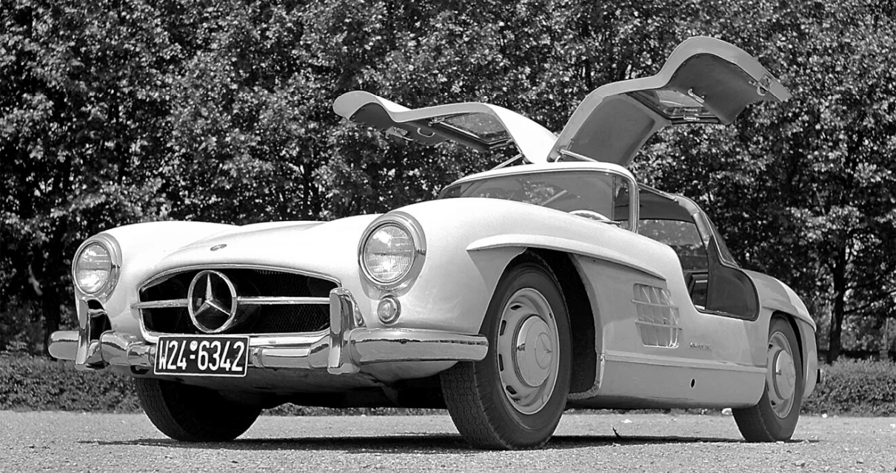
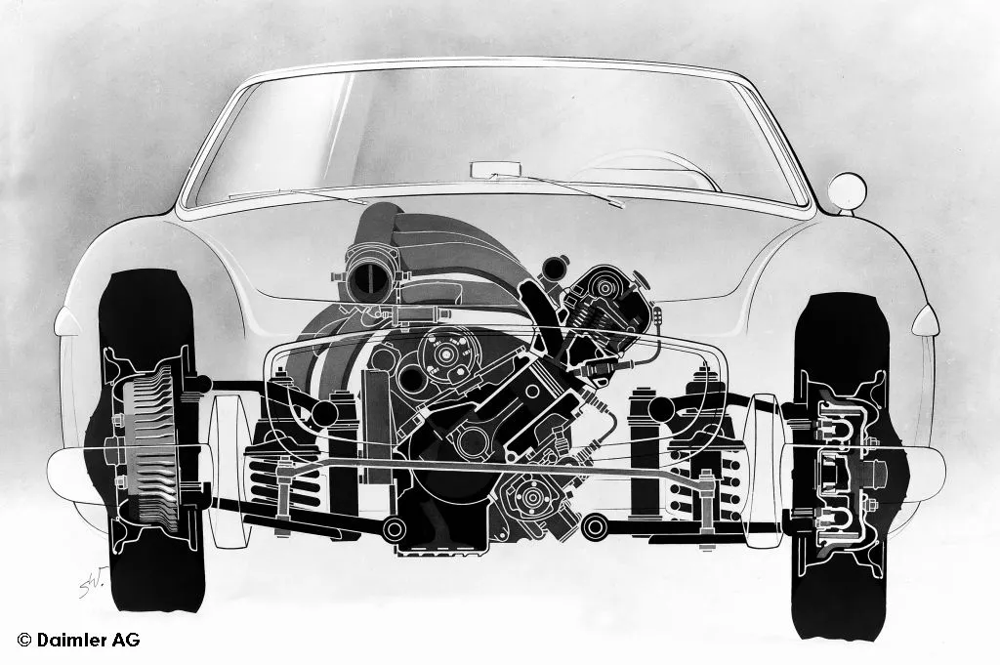
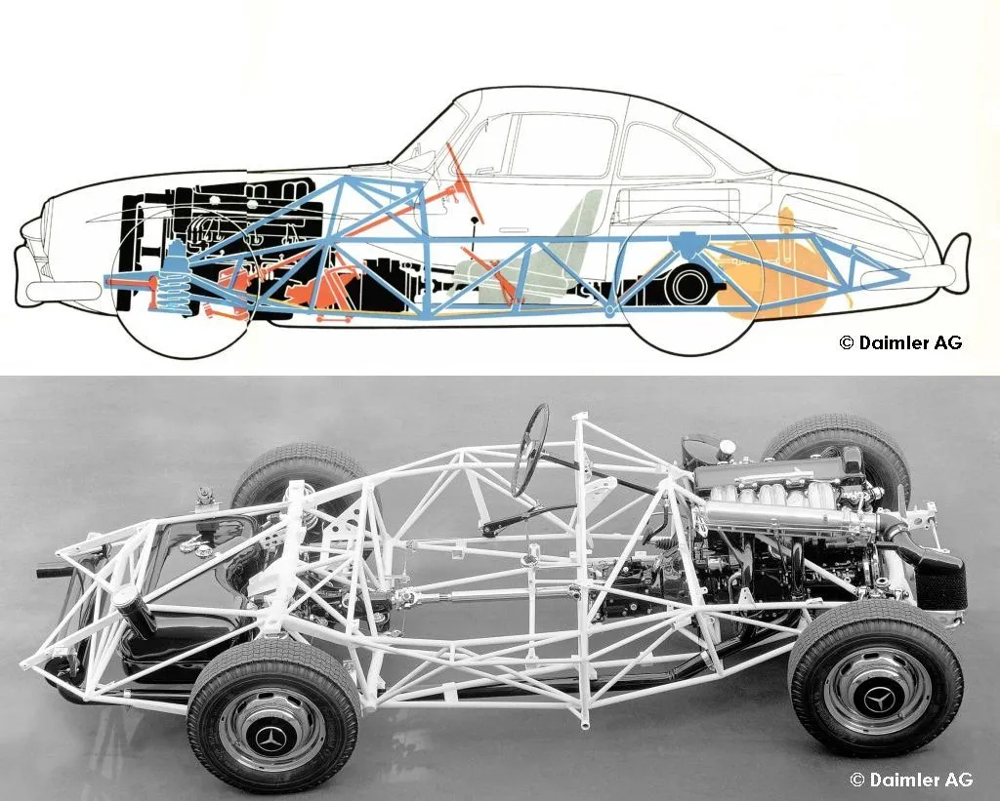
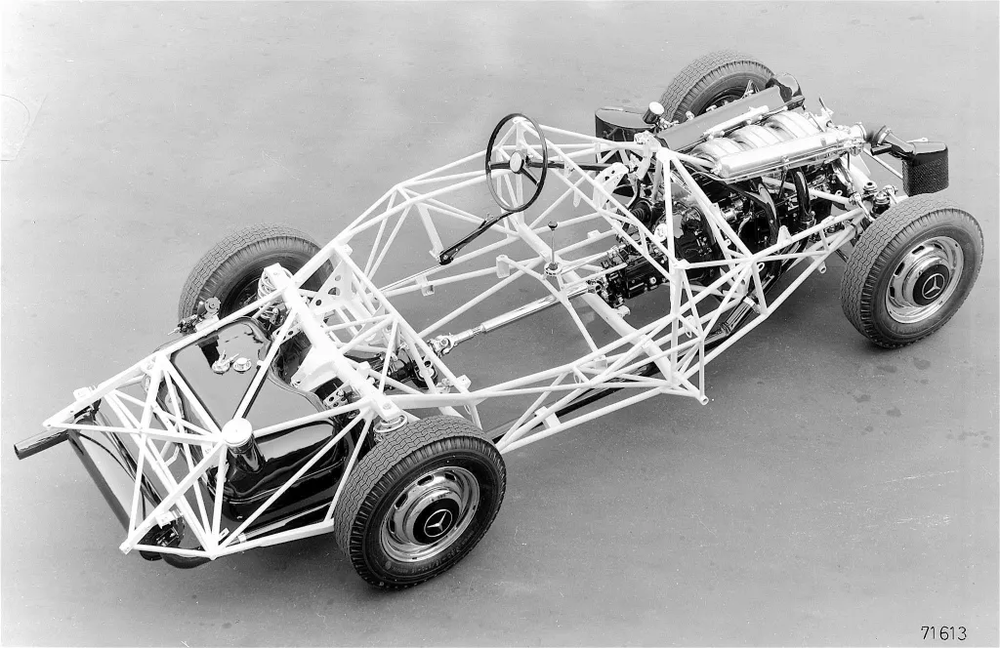
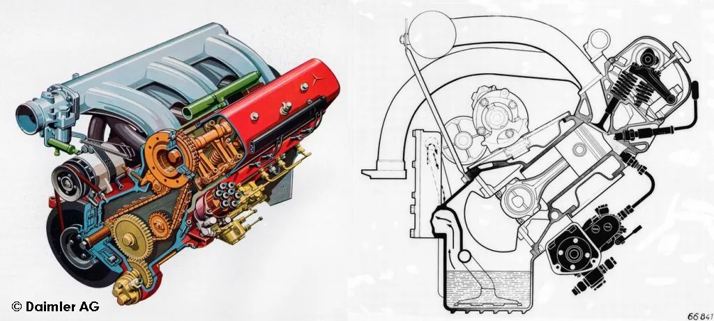
Coupe

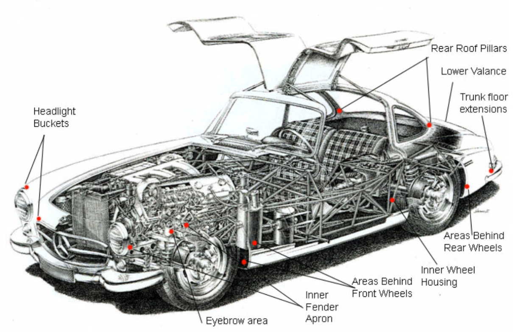

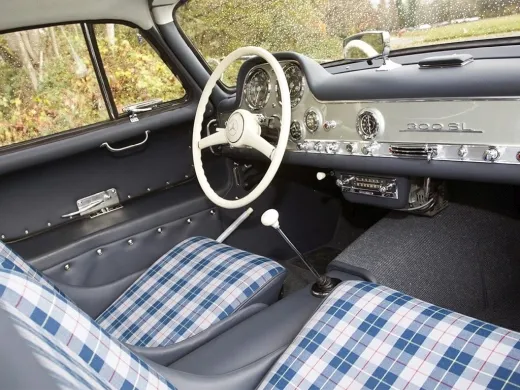

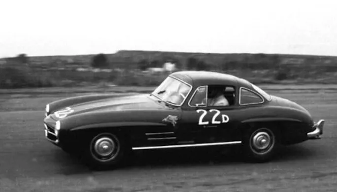

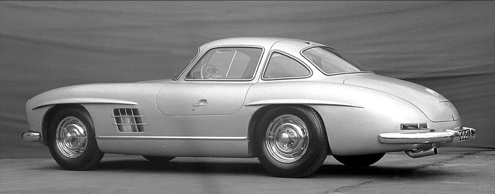


190SL


The 2nd SL (Pagoda)
W113

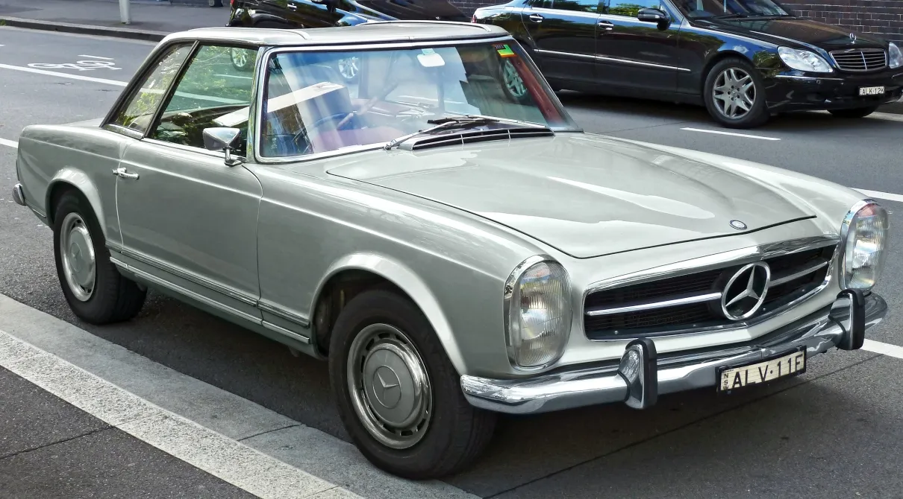
*Hard top can be installed as an option.

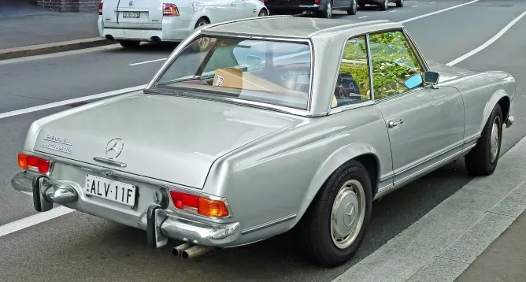

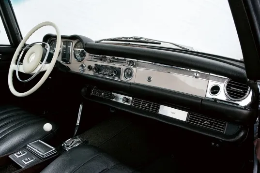

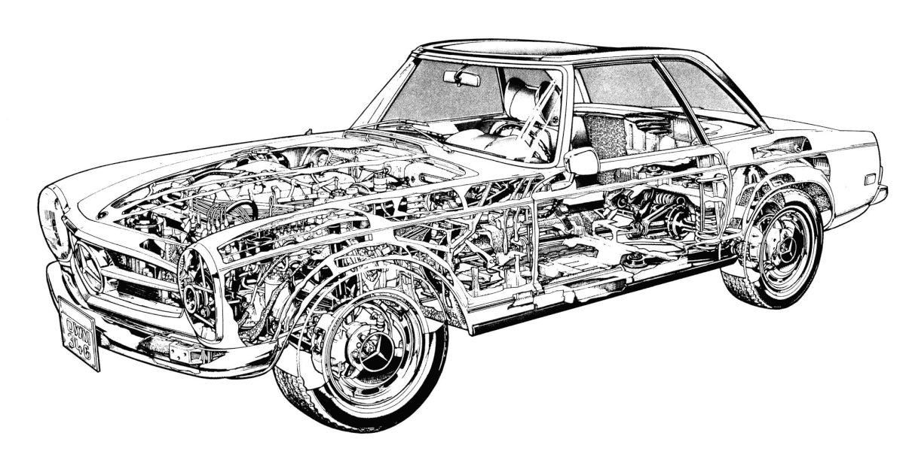
Roadster (softtop)

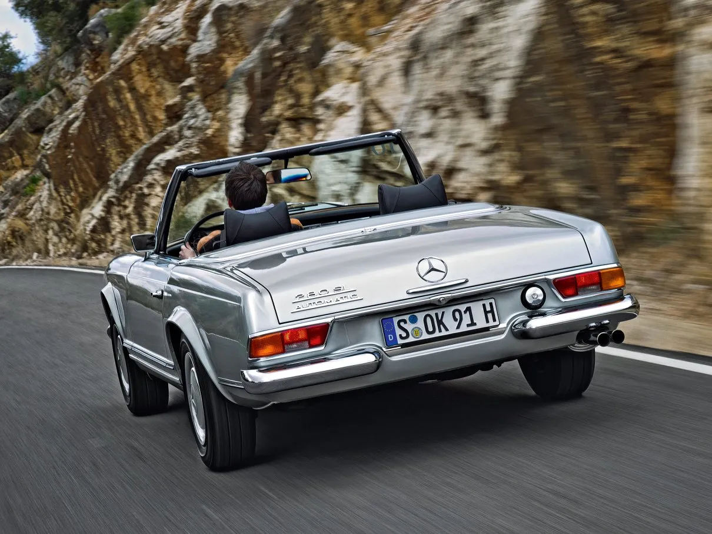

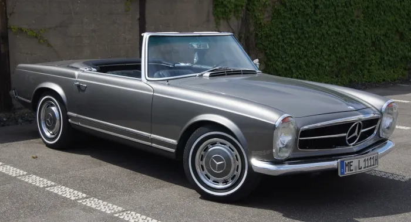

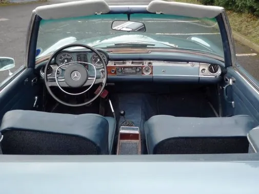

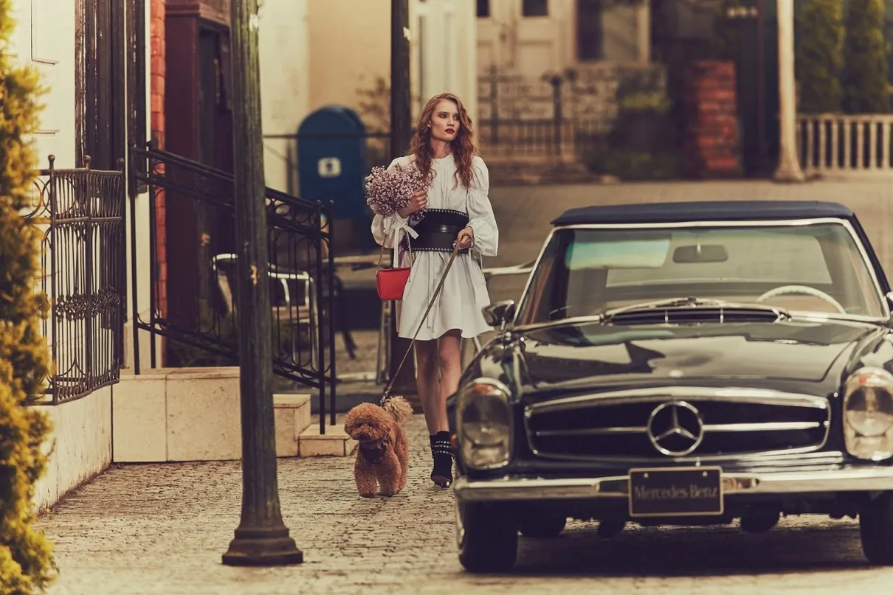
The 3rd SL , SLC
R107 / C107

*Hard top can be installed as an option.
Facelift

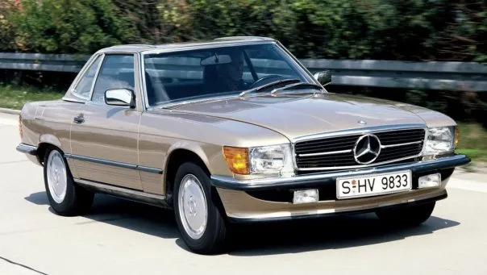

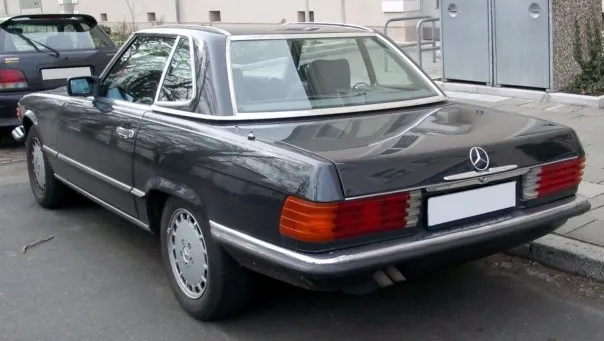


Dimensions

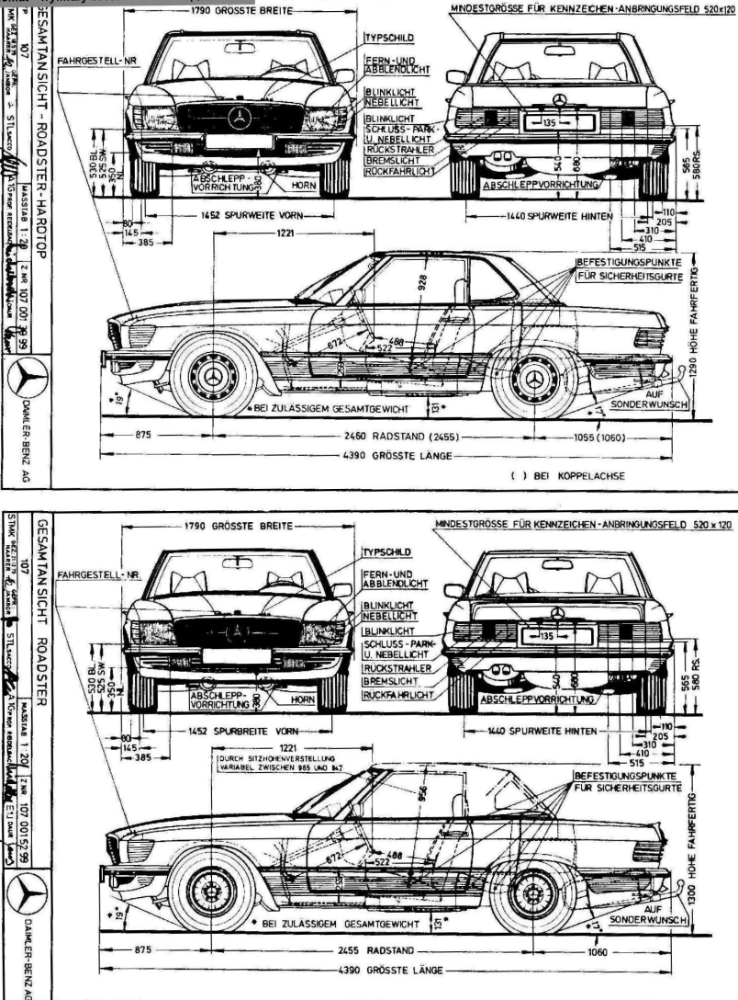


The 4th SL
R129

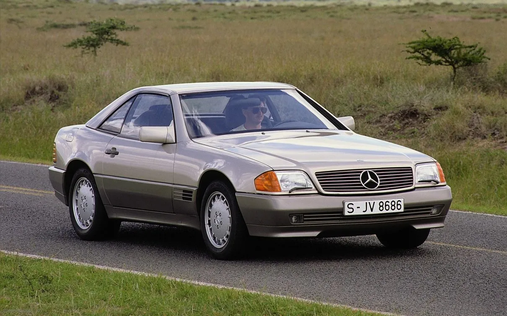